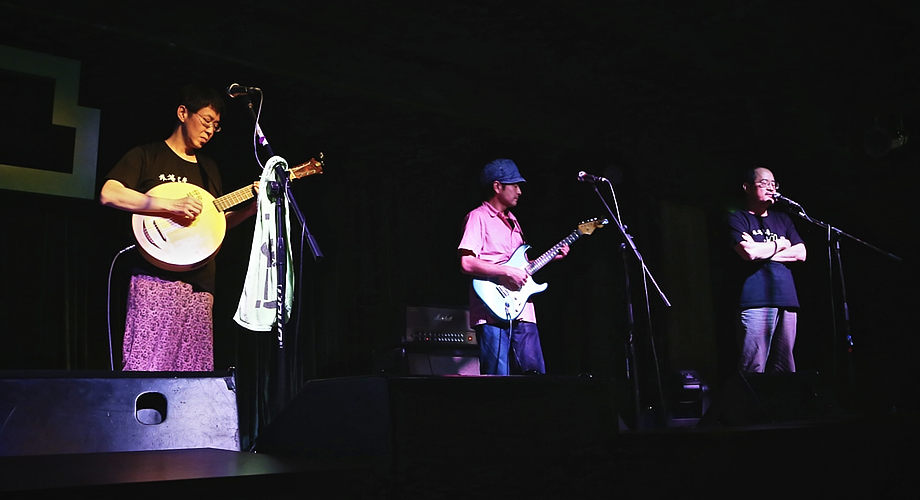

前些日子跟朋友小聚，聊到他们回到老家一座北方的煤矿小城市，发现原来那座城的下方已经被挖空了，于是整座城都挪到了旁边一处新的地方。我庄在哪里，很多漂泊异乡的人，可能最后会发现，故乡已经回不去了，或者若干年后他回到的是一个完全陌生的故乡。不要说村庄在消失，很多城市也一样，在巨大的发展和变化面前，很多过往的东西都在消失。我自己也有这样的陌生感，每次回老家，进城的那段路都会让我异常陌生，那是在郊区开拓出来的新城，这让童年时代住在旧城区的我在下高速路进城之后很长一段时间，仍然感觉陌生。只有回到老城区，才能发现回忆中的有些小店有些路口还是熟悉的样子熟悉的名字，故乡的感觉直到这个时候才扑面而来，偶尔也会鼻子发酸。比起北方的那位朋友，我已经很幸运了。